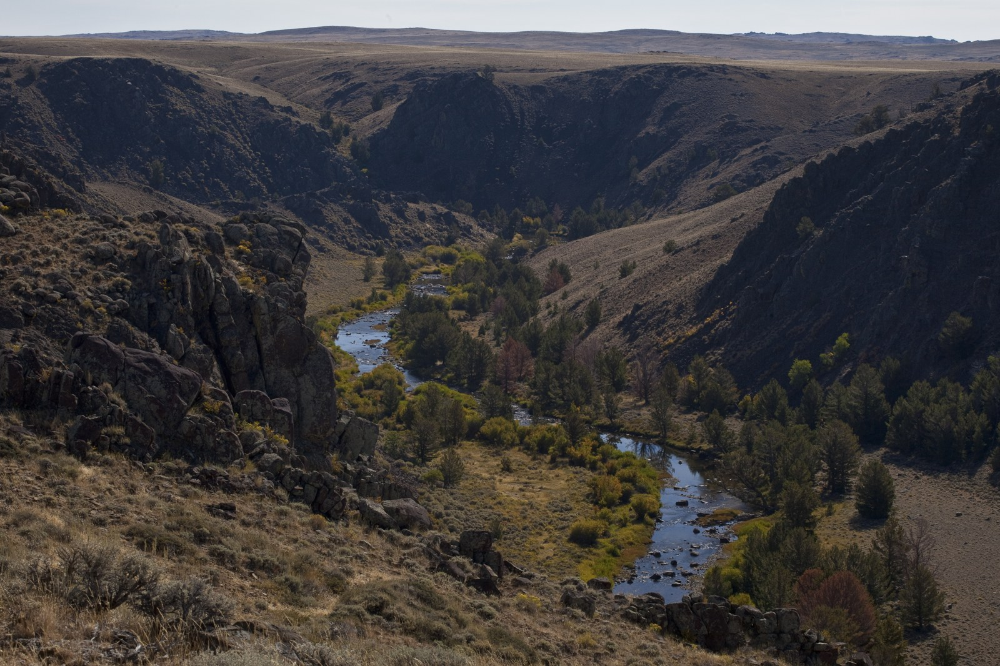

Nov 20, 2026
Interior's 2026-2030 plan would offer federal land to states, localities and tribes. Wyoming lawmakers passed a resolution in March opposing broad sales of public lands, and every member of the 2027 leadership sponsored the resolution.

CHEYENNE — The U.S. Interior Department plans to offer federal land for sale to states, localities and tribes. The goal appears in the department's 2026-2030 strategic plan.1 4
Wyoming lawmakers staked out a position on broad land sales back in March. The Legislature passed a resolution opposing "the broad or indiscriminate sale or exchange of public lands."2 The Senate vote was 27-4, and the House vote was 54-7, according to MTR Research.2 3
Nearly half of Wyoming is federally owned.4 11 The new plan names no parcels, acreage or prices.4 6
What the Plan Says
The Interior strategic plan (leaves WyoVote) says the department "will work to decrease the size of the federal estate."1 Sales would let the department "focus its resources on primary federal responsibilities and nationally significant federal lands."1 5
The plan does not define "nationally significant."4 6 A portion of sale proceeds would go back to buyers for conservation elsewhere in the buyer's state or locality.1 5
The sale passage sits beside a line on staffing. The department "will consolidate its workforce to advance operational efficiencies," the plan says.1 6
The plan also shifts Land and Water Conservation Fund spending toward easements on private land. The stated aim is that "the federal estate does not continue to grow."1 15 Elsewhere, the plan lists "land exchanges and direct transfer of lands" to support energy production.1 4
Interior oversees more than 750,000 square miles of land, mostly in the West.4 5 The plan is a road map for 2026 through 2030. Future administrations would not be bound by the plan.4 5
Federal law already limits large sales. A tract over 2,500 acres designated for sale must wait 90 days after Congress is notified. Congress can block the sale within the 90 days by concurrent resolution.7
Smaller sales to local governments already happen under the Recreation and Public Purposes Act. The law lets the Bureau of Land Management sell or lease land to state and local governments.16 The land must serve a public use, such as a park, school or fairground.16
What the Legislature Said
The measure is Senate Joint Resolution 9, "Keeping public lands protected and decisions local." Eric Barlow, R-Gillette, then a state senator, was the main sponsor.2 8
The Senate passed the resolution Feb. 23. The House passed the resolution March 5, with one member excused. The governor signed the resolution March 9 as Enrolled Joint Resolution 4.2 3
The four Senate no votes came from Republican Sens. Tim French, Bob Ide, Dan Laursen and Troy McKeown. The seven House no votes also came from Republicans.2 3
Section 2 asks Congress and federal agencies to respect county land-use plans. Section 2 also asks for the views of the local communities most affected.2
The resolution does not oppose every sale. Section 3 supports "responsible, locally supported" exchanges or disposals under existing laws. The deals must improve public access, resource use or community benefit.2
The resolution's findings state that about 91% of Wyoming residents use federal land for work, recreation and subsistence.2 The resolution asked that copies go to the president, Congress and Wyoming's congressional delegation.2
Thirty-nine lawmakers sponsored the resolution.2 8 MTR Research compared the sponsor list with the leaders chosen Nov. 14 for the 2027 session. All 12 incoming House and Senate leaders were sponsors.8 9
The 12 include Senate President-designate Tara Nethercott, R-Cheyenne, and House Speaker-designate Lloyd Larsen, R-Lander.9 The list also includes Democratic leaders Sen. Mike Gierau and Rep. Mike Yin, both of Jackson.8 9
Barlow and the Delegation
Barlow won the governor's race Nov. 3.10 Barlow opposes the Interior plan.5
Barlow spoke to the Cody Enterprise about the plan. "If we want to have a meaningful conversation, then okay, we need a seat at the table," Barlow said.5 "We don't need edicts from on high."5
Wyoming's congressional delegation has supported targeted land sales, the Wyoming Tribune Eagle reported.5 In June 2025, Rep. Harriet Hageman backed a Senate proposal to sell 2 million to 3 million acres. The tracts were Bureau of Land Management and Forest Service land in 11 Western states.11 Utah Republican Sen. Mike Lee sponsored the proposal.4 12
Hageman's office said the proposal "strikes a responsible balance" between local needs and protecting landscapes.11 Hageman later told KHOL that conservation groups misread Hageman's stance. "It's based upon someone else's interpretation of what Mike Lee's bill did," Hageman said.12
The Senate proposal did not become law.5 13
What Residents Say
A University of Wyoming survey this fall asked about selling public lands. The survey found (leaves WyoVote) 96% of residents oppose selling existing public lands to private buyers.14 5 The poll of 660 adults ran Sept. 29 to Oct. 25, with a margin of error of 4.7 points.14
The survey question named private buyers. The Interior plan names states, localities and tribes as buyers.1 14
What Comes Next
The plan already faces opposition in Congress. Rep. Ryan Zinke, R-Mont., served as Interior secretary under President Donald Trump. Zinke "remains firmly opposed to the sale or transfer of public lands," Zinke's office said.4 5 Sen. Martin Heinrich, D-N.M., and Rep. Jared Huffman, D-Calif., pledged to fight any sales.4 5
Interior did not respond to NPR's request for comment.13 The Cody Enterprise had not received a response by press time.5
That is the lay of the land heading into winter. The 69th Wyoming Legislature convenes Jan. 12, 2027.9 The text and roll calls for Senate Joint Resolution 9 (leaves WyoVote) are posted on the Legislature's website.
Credits
- U.S. Department of the Interior, Strategic Plan FY 2026-2030, Nov. 2026, p. 16. https://www.doi.gov/sites/default/files/documents/2026-11/doi-strategic-plan-2026-11-100.pdf (leaves WyoVote)
- Wyoming Legislature, 2026 SJ0009, Enrolled Joint Resolution No. 4, bill history and roll calls. https://wyoleg.gov/Legislation/2026/SJ0009 (leaves WyoVote) ; enrolled text: https://wyoleg.gov/2026/Enroll/SJ0009.pdf (leaves WyoVote)
- MTR Research, 2026 roll-call records (SJ0009 Senate third reading Feb. 23; House third reading March 5).
- The Associated Press, published by WyoFile, Nov. 12, 2026. https://wyofile.com/trump-administration-plan-to-sell-public-lands-draws-congressional-pushback/ (leaves WyoVote)
- Wyoming Tribune Eagle / Cody Enterprise — Victoria O'Brien, Nov. 17, 2026. https://www.wyomingnews.com/news/local_news/interior-unveils-plan-to-sell-public-lands/article_ad88757c-52e4-416c-a68b-736f2fdaa522.html (leaves WyoVote)
- Center for Western Priorities, Nov. 11, 2026. https://westernpriorities.org/2026/11/interiors-new-strategic-plan-calls-for-selling-off-americas-public-lands/ (leaves WyoVote)
- 43 U.S.C. § 1713(c), Federal Land Policy and Management Act. https://www.law.cornell.edu/uscode/text/43/1713 (leaves WyoVote)
- Wyoming Legislature, 2026 SJ0009 as introduced (sponsor list). https://wyoleg.gov/2026/Introduced/SJ0009.pdf (leaves WyoVote)
- Wyoming Legislature, news release, Nov. 18, 2026. https://www.wyoleg.gov/MediaRoomDocs/LeadershipandCommitteeAssignmentsFinalizedfor69thLegislature.pdf (leaves WyoVote) ; Wyoming Public Media, Nov. 16, 2026. https://www.wyomingpublicmedia.org/politics-government/2026-11-16/republicans-pick-veteran-lawmakers-to-cheyenne-leadership (leaves WyoVote)
- WyoFile, Nov. 3, 2026. https://wyofile.com/republican-eric-barlow-wins-wyoming-governors-race/ (leaves WyoVote) ; Wyoming Tribune Eagle, Nov. 2026. https://www.wyomingnews.com/news/elections/republicans-sweep-wyoming-governor-u-s-senate-u-s-house-seats/article_015e8bf4-45ed-4a1c-8c5f-b0e108666164.html (leaves WyoVote)
- Office of Rep. Harriet Hageman, "WY It Matters," June 20, 2025. https://hageman.house.gov/sites/evo-subsites/hageman.house.gov/files/evo-media-document/wy-it-matters-senate-energy-and-natural-resources-committee%27s-budget-reconciliation-bill-proposal.pdf (leaves WyoVote) ; Oil City News, Aug. 25, 2026. https://oilcity.news/community/2026/08/25/wyoming-dems-pitching-public-lands-kitchen-table-issues-in-underdog-bids-for-u-s-congress/ (leaves WyoVote)
- KHOL — Jenna McMurtry, Aug. 15, 2026. https://891khol.org/in-final-days-of-senate-primary-mead-critiques-hageman-defends-public-lands-record/ (leaves WyoVote)
- NPR — Kirk Siegler, Nov. 14, 2026. https://www.npr.org/2026/11/14/nx-s1-6039155/trump-faces-bipartisan-backlash-over-plan-to-sell-public-lands-to-states-and-tribes (leaves WyoVote)
- University of Wyoming, news release, Oct. 29, 2026 (2026 Wyoming Election Year Survey). https://www.uwyo.edu/news/2026/10/nearly-all-woming-residents-oppose-selling-public-lands-most-oppose-more-ai-data-centers-uw-survey-shows.html (leaves WyoVote)
- Field & Stream, Nov. 2026. https://fieldandstream.com/stories/conservation/public-lands-and-waters/interior-plan-prioritizes-public-land-sell-offs (leaves WyoVote)
- Bureau of Land Management, Recreation and Public Purposes Act. https://www.blm.gov/recreation-public-purposes-act (leaves WyoVote) ; Bureau of Land Management, news release, Nov. 18, 2026 (Ivins City lease). https://www.blm.gov/announcement/blm-proposes-land-lease-supporting-southwestern-utahs-ivins-city-community (leaves WyoVote)